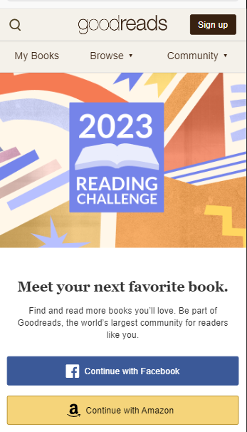

White Space & Clean Design
Apple

The white space & clean design principle is clearly exemplified on Apple.com. First of all they have well placed imagery with clear color contrasts. The webpage immediately draws you to the new iPhone 14. It's a beautifl desplay of the new iPhone colors with a crisp white background.
PARC: Contrast
LA Fitness
Contrast is one of the most powerful tools that can be used when designing a website. The idea of contrast is to make dis-similar elements look different. On lafitness.com we can clearly see the different elements because of the black background and white font colors. It's very easy to read due to the contrast levels between the colors.
Visual Hiearachy
Goodreads
With visual hierarchy, the developer can highlight the importance of each element. The end user is typically drawn to the largest element and brightest colors on the page. Although there are other princicples related to this design technique those were the two that stood out the most on goodreads.com. The most visibily noticeable element is the 2023 reading challenge. The next most important piece is connecting the account to either facebook or amazon. The way this page is designed uses visual hierarchy to draw the user to these elements.